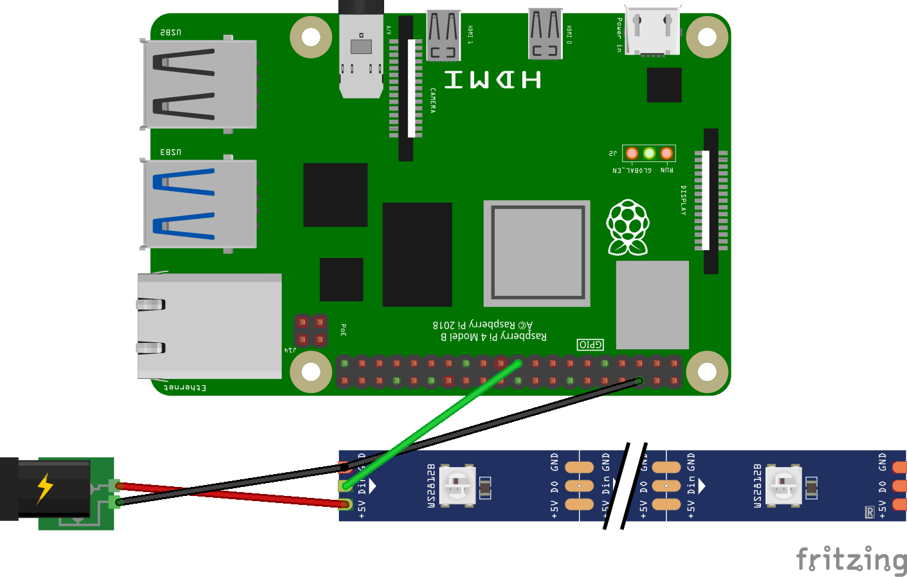

RGB Led Strip
Raspberry Pi package for controlling addressable RGB LED Strip on WS281x chip (Neopixel) written in Julia.
Introduction
The addressable RGB LED strip, which are based on WS281x chip or similar, is popular for different education and DIY projects. It allows controlling the each pixel of strip and creating a nice colored show. On the YouTube you can find examples how Raspberry Pi can be used for it.
This is a Julia's package for LED strip control which is based on BaremetalPi.jl engine.
Installation
You need Raspberry Pi with the default OS installed. I tested on Raspberry Pi 4 (Raspberry Pi OS 32bit) but it should be working with other Raspberry versions and OS.
SPI protocol should be turn on, see OS settings.
In other tutorials it is also recommended to set frequency in the file
/boot/config.txtas follows
core_freq=500
core_freq_min=500
# spidev.bufsiz=32768 # if default SPI buffer too small- Julia should be installed on Raspberry Pi. I have tested on v1.1.0 which can be installed with
sudo apt update
sudo apt install julia- The package can be installed with (from Julia env):
] add https://github.com/metelkin/LEDStrip.jl.gitCircuits
A. LED strip can be connected based on the following scheme. If the 3.3V signal is not enough for RGB Strip DIN a chip transforming 3.3V to 5V logic may be required. I used SN74AHCT125N chip. 
B. In many cases LED Strips can work with 3.3V output signal. In that case the chip is not required. 
Usage
"Hello World!" example
using LEDStrip
# use main SPI MOSI connector is GPIO10
# total pixels count is 100
s = SPIStrip(0; pixel_count = 100)
# set pixels 1, 2, 3, 4 as red, green, blue, white
# for 5 seconds, then off
set_pixels!(s, [0xff0000, 0x00ff00, 0x00ff00, 0xffffff]) # update buffer
show_pixels(s) # show buffered colors
sleep(5.)
hide_pixels(s) # hide all colorsVideo demo

Known issues and limitations
Currently only SPI is supported via GPIO10 and GPIO20. PWM and PCM protocols can be potentially used as well.
Related projects
- C library with connectors to Python and other languages (but not Julia) https://github.com/jgarff/rpi_ws281x
- NodeJS package https://www.npmjs.com/package/rpi-ws281x